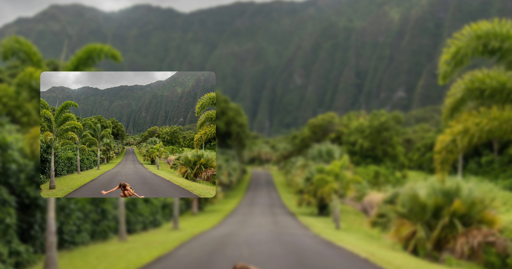
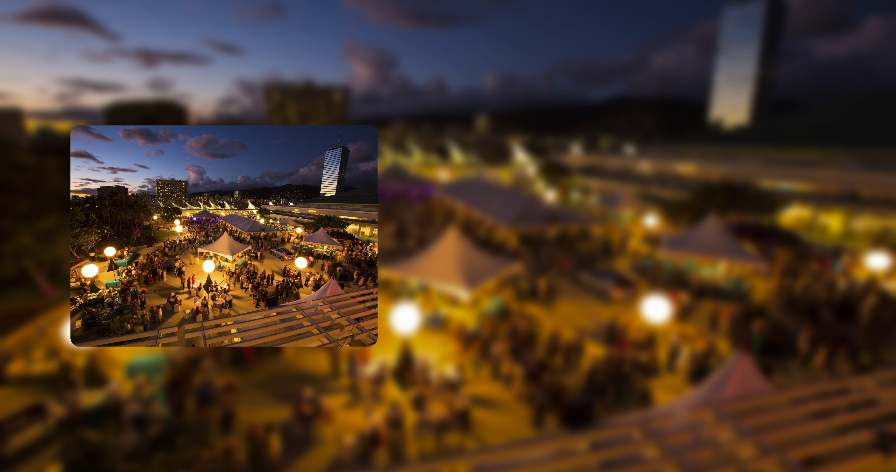
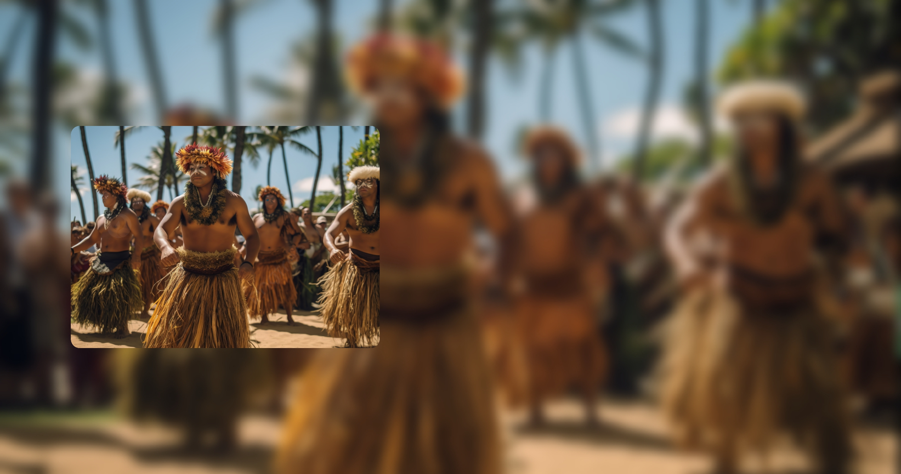

Malama Hawaii
The Most Rewarding Trip Is One That Gives Back
The Hawaiian Islands itinerary that can change your life isn't found in any guidebooks. Because what makes the Hawaiian Islands truly special is not only our stunning natural beauty or our vibrant culture - it's the deeply rooted relationship that connects them.
That relationship between people and place grows stronger every time you mālama (give back). When you give back - to the land, the ocean, the wildlife, the forest, the fishpond, the community - you're part of a virtuous circle that enriches everything and everyone. Including your experience as a visitor.
Several organizations offer opportunities for visitors to pay it forward, like beach clean-ups, native tree planting, and more. Engage in some of our volunteer opportunities below, and in exchange, experiencfge Hawai'i on a much deeper and connected level. Through the Mālama Hawai'i Program, you could qualify for a special discount or even a free night from a participating hotel when participating in its dedicated volunteer activity.
Annul Festivals & Events
The Festive Islands of Aloha
Dive deep into Hawai'i's local community and you'll discover a culture alive with paniolo (cowboys), Chinese dragons, ethnic festivals, culinary events and an exotic collection of celebrations.
Annul Events
Many of Hawai'i's most memorable celebrations occur annually. Some, like the Honolulu Marathon(December) and the Hawai'i International Film Festival (October), draw visitors and participants from around the globe.
food festivals
Events that feature local foods and agricultural products attract both locals and visitors. The Hawai'i Food and Wine Festival on the islands of Hawai'i, Maui and O'ahu (October) and the Kapalua Wine & Food Festival (June) on Maui are long-running culinary events, hosting world-class chefs, winemakers and master sommeliers for thousands of wine and food lovers.
Art & Culture
Hawaiian Arts & Culture: The Expression of Aloha
The oldest of Hawaiian chants describe the Hawaiian Islands, the spirits that inhabit them, the forces of nature that shaped them and all the living things upon them as inextricably connected. This sense of connection is the foundation of Hawaiian culture: understanding that we all have a mandate to mālama, to care for our environment and for one another.
Today, Hawaiian culture may hold many of the answers sought in a rapidly changing world. The spirit of aloha – being in the presence of and sharing the essence of life – teaches us lessons of peace, kindness, compassion and responsibility to future generations. These lessons are expressed through chant, music, hula, arts and cultural practices, and through the warm, genuine greetings that are a hallmark of Hawaiian hospitality.
Hawai'i Regional Cuisine

Cuisine of Hawai'i
It's been said that a melting pot is not the most accurate way to describe Hawai'i's multiethnic population. It's more like a stew, where all the flavors complement and influence one another but the ingredients retain their richness and integrity instead of melting into an even sameness. Nothing tells the story of arrival, intermingling and reinvention of cultural traditions on the islands as deliciously as the variety of cuisines that make Hawai'i a foodie wonderland. It all starts with Hawai's first people, the Native Hawaiians.
Stewards of an island chain in the middle of the Pacific Ocean, Native Hawaiians knew how to live sustainably. They partitioned segments of each island into ahupua'a (land divisions), where people were given the responsibility and privilege to manage the resources in their portion of the mountains, lowlands or ocean. The Hawaiians had a genius for engineering, constructing vast irrigation systems to supply water to terraced farms.